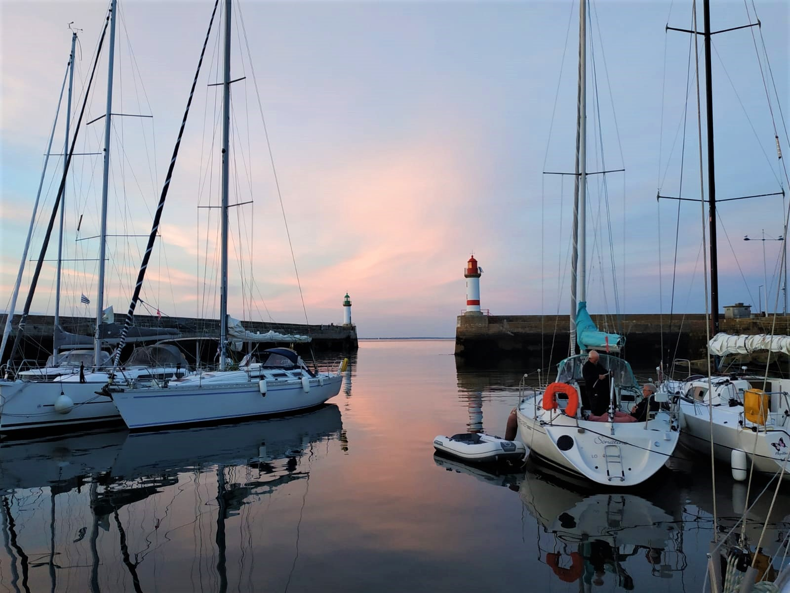

Bonjour je m'appelle
Roxane Riou
Je suis étudiante en informatique à l'IUT de Nantes et
je cherche une alternance de deux ans en développement web
Sept. 2021 - actuel
BUT Informatique
IUT de Nantes
Sept. - Nov. 2020
Licence 2
Sciences de la vie
Parcours ABT (international)
Université de Nantes
UFR Sciences et Techniques
2018-2019 et 2019-2020
PACES
validation de la 1ère année
Université de Nantes
UFR Médecine
et Techniques médicales
2017-2018
Baccalauréat scientifique
(spécialité SVT)
mention bien
Lycée Jules Vernes, Nantes
15 mars - 15 mai 2021
Stage en FabLab (BloLab) à Cotonou, Bénin
Développement web
- Réalisation d'un cahier des charges
- Utilisation de HTML, CSS, JS, Bootstrap
- Création de sites web (voir la section projets)
- Apprentissage de PHP et du framework Laravel
- Création et utilisation d'une base de données
Impression 3D et découpe laser
- Modélisation 3D sur FreeCad et Inkscape
- Paramétrage de l'imprimante et impression 3D
- Utilisation de la découpe laser via le logiciel RdWorks v8
Electronique
- Apprentissage et utilisation de l'IDE Arduino
- Réalisation de circuits électriques
- Rédaction d'un rapport des concepts appris en électronique, impression 3D et découpe laser
Développement
Langages
- HTML5
- CSS
- JavaScript
- Python
- Kotlin, Golang, SQL, PHP, C
Frameworks
- Laravel
- Bootstrap
- Tailwind CSS
Electronique
- Utilisation de Arduino
- Construction de circuits électriques
Impression 3D et
Découpe laser
- Modélisation 3D sur FreeCad
- Utilisation de RdWorks v8, Inkscape
Langues
- Français: langue maternelle
- Anglais: niveau C2
- Thaï: niveau B1
- Allemand: niveau B1
Autres
- Suites Google Workspace, OpenOffice et LibreOffice
- Résolution de problèmes
- Capacité d'adaptation
- Organisation
- Travail d'équipe
- Aisance relationnelle
2013
Ecole Française de Bratislava, Slovaquie
- 1er prix du concours international d'écriture Leaweb
- Demi-finale européenne au concours international d'art oratoire
"Les Ambassadeurs en Herbe" organisé par l'UNESCO
A Propos
J’ai la chance d’être binationale (française et thaïlandaise) et d’avoir vécu 10 ans à l'étranger, grâce à mon père qui travaille au ministère
des Affaires Étrangères. J’ai ainsi vécu 3 ans en Inde à Chandigarh, 3 ans en Corée du Sud à Séoul et enfin 4 ans en Slovaquie à Bratislava.
J'ai également eu l'occasion de visiter une quinzaine de pays au cours de ma vie. Dernièrement, j'ai fait un stage de 3 mois à Cotonou au Bénin.
L'expatriation et les voyages m'ont permis d'acquérir une bonne capacité d'adaptation et d'être une personne curieuse, sociable et ouverte aux
autres cultures et manières de faire.

République tchèque

Je pratique le piano depuis 14 ans. J'ai été dans des écoles de musique en Corée du Sud et en Slovaquie et à mon retour en France j'ai
intégré le Conservatoire de Nantes. J'ai eu l'occasion de jouer en concert, notamment à la résidence de l'Ambassade de France en Slovaquie.
La pratique du piano m'a permis de gagner en discipline et m'a donné le goût de l'effort.
Je m'entraîne une à deux fois par semaine. Au cours de ma vie j'ai essayé de nombreux sports : basketball, handball, floorball, natation, etc. Depuis quelques années je fais plutôt des sports nautiques. J'ai fait du catamaran, du kitesurf et plus récemment j'ai fait un stage d'une semaine à bord d'un voilier avec Les Glénans (école française de voile).
Je suis une grande amatrice de cinéma. Je regarde des films de tous genres et j'aime particulièrement les films de gangster (Once Upon A Time In America, The Godfather, A Bronx Tale) et les comédies (Airplane!, The Grand Budapest Hotel, Knives Out). Outre le cinéma j'aime la lecture, en particulier les livres fantastiques et les romans policiers.
Projets

CartoTourisme
Langages : HTML, CSS, PHP
Frameworks : Laravel, Bootstrap
Le projet CartoTourisme consiste à cartographier le Bénin et créer un site internet afin de promouvoir le tourisme dans le pays. J’ai eu l’occasion de travailler sur ce projet pendant 2 mois lors de mon stage au BloLab. J’ai rédigé un cahier des charges puis réalisé le site internet à partir d’un template et à l’aide des frameworks Laravel et Bootstrap. Le site CartoTourisme est géré et alimenté par le site administrateur présenté ci-contre.
Visiter le site (non dynamique)
Site admin pour CartoTourisme
Langages : HTML, CSS, PHP
Frameworks : Laravel, Bootstrap
Le site administrateur permet de gérer les articles (événements, lieux à visiter, etc.) et la messagerie du site CartoTourisme. Le client peut alimenter facilement la base de données que j'ai mise en place et ainsi compléter son site. J'ai pu mettre en application les 4 opérations de base liées aux données : Create, Read, Update, Delete. J'ai beaucoup appris en autodidacte, notamment l'utilisation de Laravel.
Projet Laravel sur GithubPortfolio pour compositeur de musique
Langages : HTML, CSS, JavaScript
Frameworks : aucun, site réalisé from scratch
Au cours d'un projet de groupe pour le BUT, nous avons réalisé un site portfolio pour un compositeur de musique. L'objectif de ce projet était de faire un site ergonomique et accessible. J'ai travaillé avec un autre de mes camarades sur la partie front-end (HTML, CSS, JavaScript). J'ai fait la majorité du design du site et j'ai également fait le logo sur le site de conception graphique Canva.
Visiter le siteContact
Je suis actuellement à la recherche d'une alternance de 2 ans en développement web. Vous pouvez me contacter avec l'adresse mail ci-dessous. Vous trouverez également mon profil LinkedIn et mon profil Github si vous souhaitez voir mes différents projets.